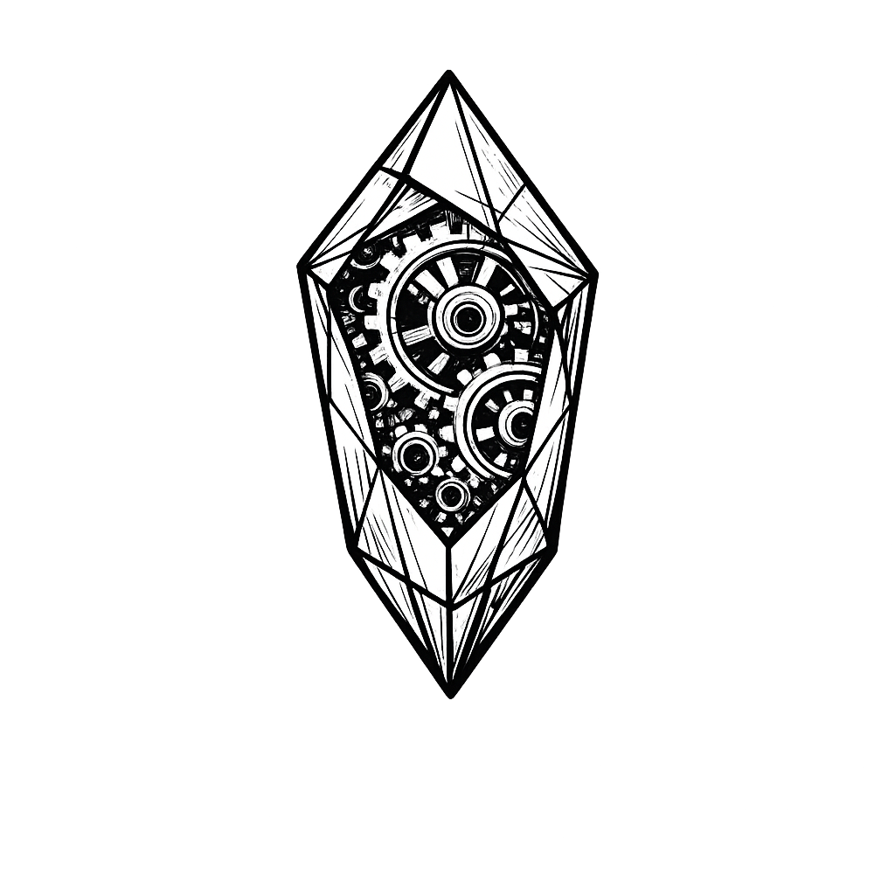

Girişimciliğin Tarihsel Kodları ve Zihinsel Cephaneliğiniz
Filmler sadece eğlence aracı değildir; doğru izlendiğinde, liderlik psikolojisini, kriz anındaki karar alma mekanizmalarını ve insan doğasının para/güç karşısındaki tepkilerini analiz edebileceğiniz birer vaka çalışmasıdır (Case Study).
McDonald's'ın kuruluş hikayesini anlatır. İki kardeşin bulduğu "hızlı servis" fikrini, milkshake makinesi satıcısı Ray Kroc'un nasıl fark edip, ahlaki sınırları zorlayarak devasa bir küresel imparatorluğa dönüştürdüğünü işler.
Neden İzlemelisiniz? Fikri bulanın değil, o fikri acımasızca iş modeline çevirip "ölçeklendiren" (scale eden) kişinin kazandığını anlamak için.
Jordan Belfort'un Wall Street'te değersiz hisse senetlerini zenginlere satarak nasıl bir gecede milyoner olduğunu ve açgözlülüğün getirdiği o kaçınılmaz, yıkıcı sonu anlatır.
Neden İzlemelisiniz? Satışın, ikna psikolojisinin ve müşteri manipülasyonunun karanlık yüzünü görmek; etik sınırların aşıldığında kurulan sistemlerin çökmeye mahkum olduğunu kavramak için.
Mark Zuckerberg'in Harvard yatakhanesinde başlattığı Facebook projesinin, fikir hırsızlığı davaları ve en yakın arkadaşıyla (Eduardo Saverin) yaşadığı ölümcül hisse senedi savaşları eşliğinde büyümesini konu alır.
Neden İzlemelisiniz? Kurucu ortaklıkların (Co-founder) yazılı sözleşmeler olmadan ne kadar tehlikeli olabileceğini ve yatırımcı ilişkilerindeki yılan çukurlarını görmek için.
Bill Gates (Microsoft) ve Steve Jobs (Apple) arasındaki efsanevi rekabeti anlatır. Grafik arayüzü ve farenin Xerox'tan nasıl "çalınıp" ticari bir ürüne dönüştürüldüğünü belgeler.
Neden İzlemelisiniz? Piyasada ilk olmanın değil, başkasının teknolojisini en iyi şekilde paketleyip (pazarlayıp) satanın vizyoner sayıldığını öğrenmek için.
Kısıtlı bütçeye sahip Oakland Athletics beyzbol takımının menajeri Billy Beane'in, oyuncu transferlerinde yıldız isimler yerine sadece matematiği ve veriyi (data) kullanarak dev bütçeli takımları nasıl alt ettiğini anlatır.
Neden İzlemelisiniz? Sınırlı sermaye ile maksimum verim elde etmenin (Lean Startup) ve eski kafalı endüstrileri veri analiziyle parçalamanın en saf halini görmek için.
Chris Gardner'ın eşi tarafından terk edilip evsiz kaldıktan sonra, küçük oğluyla birlikte tuvaletlerde yatarken, ücretsiz bir borsa stajyerliği programında en iyisi olmak için verdiği insanüstü mücadeleyi anlatır.
Neden İzlemelisiniz? Başarısızlık ve çaresizlik anlarında yılmazlığın (resilience) ne demek olduğunu iliklerinize kadar hissetmek için.
2008 Küresel Finans Krizi'ni aylar öncesinden gören ve tüm bankacılık sisteminin çökeceğine dair "açığa satış" yaparak milyarlarca dolar kazanan bir avuç aykırı finansçının gerçek hikayesidir.
Neden İzlemelisiniz? Kalabalıkların (sürünün) her zaman haklı olmadığını, krizleri önceden görüp piyasanın kör noktalarında nasıl pozisyon alınacağını anlamak için.
1960'larda otomotiv devi Ford'un, prestijli Le Mans yarışlarında yenilmez Ferrari'yi alt etmek için aykırı mühendis Carroll Shelby ve yarışçı Ken Miles'ı işe almasını işler.
Neden İzlemelisiniz? Saf inovasyon ve yeteneğin, kravatlı yöneticilerin kurumsal bürokrasisine (red tape) karşı verdiği savaşı analiz etmek için.
Sıradan bir ev kadını olan Joy Mangano'nun, kendi icat ettiği "kendi kendini sıkan paspas" (Miracle Mop) ile üretim, patent hırsızlığı ve pazarlama zorluklarını aşarak nasıl bir ticaret kraliçesine dönüştüğünü anlatır.
Neden İzlemelisiniz? Ürün geliştirme sürecinde fabrikalarla edilen kavgaları, patent davalarını ve sıfırdan "Pazar Yaratma" stratejisini gözlemlemek için.
Frank Abagnale Jr.'ın henüz 19 yaşına gelmeden Pan Am pilotu, doktor ve savcı kılığına girerek milyonlarca dolarlık sahte çek dolandırıcılığı yapmasının gerçek hikayesidir.
Neden İzlemelisiniz? Özgüvenin, dış görünüşün ve algı yönetiminin (algı = gerçeklik) iş dünyasındaki korkutucu gücünü idrak etmek için.
Genç ve hırslı borsa simsarı Bud Fox'un, efsanevi yatırımcı Gordon Gekko'nun kanatları altına girmesini ve kapitalizmin "Açgözlülük iyidir" felsefesiyle tanışmasını konu alır.
Neden İzlemelisiniz? Pazar ekonomisinin acımasız kurallarını ve içeriden bilgi sızdırmanın (insider trading) yozlaştırıcı etkisini anlamak için.
Bir yatırım bankasında, 2008 krizinin patlak vermesinden sadece 24 saat önce, bir risk analistinin sistemin çökmek üzere olduğunu fark etmesiyle üst yönetimin gece yarısı aldığı acil kararları işler.
Neden İzlemelisiniz? Milyar dolarlık kararların ahlaki ikilemlerini, kriz anında yönetim kurulundaki buz gibi pragmatizmi izlemek için.
Bir emlak ofisinde çalışan dört satıcının, sadece birinci ve ikincinin işini koruyabileceği, diğerlerinin kovulacağı bir satış yarışması altındaki çaresiz çırpınışlarını konu alır.
Neden İzlemelisiniz? "ABC" (Always Be Closing - Her Zaman Satışı Kapat) felsefesini ve rekabetin zayıfları nasıl ezip geçtiğini görmek için.
Sovyet Rusya'da icat edilen basit bir blok oyununun (Tetris), Soğuk Savaş döneminde demir perdeyi aşıp Game Boy ile tüm dünyaya yayılmasının arkasındaki telif ve lisans savaşlarını anlatır.
Neden İzlemelisiniz? Fikri mülkiyet (IP) haklarının, kontratların ve uluslararası müzakere masalarındaki stratejik hamlelerin önemini kavramak için.
Havacılık öncüsü ve milyarder Howard Hughes'un obsesif-kompulsif bozukluğuna rağmen sinema ve uçak sanayisinde imza attığı devasa, akılalmaz ve riskli projeleri işler.
Neden İzlemelisiniz? Vizyonerliğin ve mükemmeliyetçiliğin delilikle olan ince çizgisini, vizyon uğruna her şeyi riske atabilme cesaretini anlamak için.
İçine gireceğiniz savaşta en büyük silahınız sermayeniz değil, entelektüel derinliğinizdir. Mutfakta harikalar yaratmak için gereken o tarif bilgisi gibi, iş dünyasında da zihninizi bu 50 başyapıtla beslemelisiniz.
Okulun öğretmediği finansal okuryazarlık. Aktif (Sana para getiren) ve Pasif (Senden para götüren) varlık ayrımının ustalık sınıfı.
Aylarca gizli kod yazmak yerine, en ilkel ürünle (MVP) hemen pazara çıkıp müşteri verisiyle (Öğren-Yap-Ölç) büyüme stratejisi.
Rekabet ezikler içindir. Var olan bir şeyi geliştirmek yerine, yepyeni bir pazar yaratıp orada tekelleşmenin felsefesi.
Nike'ın kuruluşundaki o kanlı terli mücadele. İflasın eşiğindeki uykusuz gecelerin ve operasyonel tedarik krizlerinin romanı.
Büyük hedefler koymak yerine, %1'lik mikroskobik günlük sistemler kurarak "Bileşik Getiri" ile devasa sonuçlara ulaşmanın yolu.
İnsanların "Evet" demesini sağlayan 6 evrensel psikolojik tetikleyici; kıtlık, otorite, sosyal kanıt ve karşılıklılık ilkesi.
Warren Buffett'ın hocasından, duygulara kapılmadan şirket bilançolarını okumanın ve değer yatırımının (Value Investing) kutsal kitabı.
Network kurmanın, ego yönetimi yapmanın ve insan ilişkilerinde çatışmadan galip ayrılmanın 100 yıllık değişmez formülü.
Beynimizin Sistem 1 (İçgüdüsel) ve Sistem 2 (Analitik) olarak nasıl çalıştığı; müşterilerin rasyonel değil, duygusal karar verdiği gerçeği.
SpaceX ve Tesla'nın kuruluşundaki acımasız çalışma etiği, mühendislik çözümleri ve risk toleransının detaylı anatomisi.
İyi şirketler neden sadece "iyi" kalır? Onları "Mükemmel" yapan o 5. Seviye Liderlik ve Kirpi Konsepti'nin bilimsel araştırması.
Dahilerin sırrı yetenek değil, 10.000 saatlik pratik kuralı ve doğru zamanda doğru fırsat pencerelerinde doğmuş olmalarıdır.
Savaşmadan kazanmanın yolları. Rakiplerin zayıf noktalarını stratejik konumlanma ve aldatma taktikleriyle iş dünyasına uyarlama rehberi.
İşler tıkırında giderken CEO olmak kolaydır. Şirket batarken, en yakın arkadaşınızı kovmanız gerektiğinde ne yapacağınızı anlatan acımasız rehber.
Gücü elde tutmak için gerektiğinde korkulmanın sevilmekten daha güvenli olduğunu anlatan pragmatist siyaset ve yönetim felsefesi.
Bildirimlerin ve sosyal medyanın zihni çürüttüğü çağda, saatlerce bölünmeden lazer odaklanmayla çalışabilme becerisi.
Yüzyıllarca ayakta kalan vizyoner şirketlerin (Katalist gibi) temel değerlerini nasıl koruduklarının analizi.
Kahverengi ineklerin arasında dikkat çekmek istiyorsan Mor İnek olmalısın. Ürüne "Fark edilebilirlik" kodlama sanatı.
Sanat ve teknolojinin kesişimi. Kullanıcı deneyimi (UX) takıntısının ve vizyonu "Gerçekliği Çarpıtma Alanı" ile ekibe dikte etmenin romanı.
Tetikleyici, Eylem, Ödül, Yatırım. Ürünleri nasıl alışkanlık yapan bağımlılıklara dönüştürebilirsiniz?
Kazandığının en az onda birini kendine sakla. Servet birikiminin 4000 yıllık en temel değişmez kuralları.
İnsanlar "Ne" yaptığınızı değil, "Neden" yaptığınızı satın alırlar. Gerçek liderliğin altın çemberi.
Proaktif olmak, sonu düşünerek işe başlamak ve "Kazan-Kazan" zihniyetini hayatın merkezine koymak.
Öngörülemez, aşırı etkili finansal veya tarihi krizlerin doğasını ve istatistiklerin neden yanıltıcı olduğunu kavrama rehberi.
Milyarder yatırımcının şirketinde uyguladığı "Radikal Şeffaflık" ve kararları ego ile değil algoritmalarla alma prensipleri.
Mükemmel yönetilen dev şirketler neden batar? Çünkü yeni, ucuz "yıkıcı teknolojileri" (Disruptive) baştan ciddiye almazlar.
Genç bir zihnin tembellik ve haz peşinde koşmaktan kurtulup, zihinsel bir kılıç gibi nasıl keskinleştirileceğinin psikolojisi.
Acıyı sevmek. Beyin sana "Bitti, pes et" dediğinde aslında kapasitenin sadece %40'ını kullanıyor olduğun gerçeği.
Eski bir FBI rehine kurtarmacısından iş masasında pazarlık taktikleri. Empatiyi silah olarak kullanarak istediğini alma sanatı.
Bir projenin %50'si ürün, %50'si büyüme kanallarıdır (Traction). 19 farklı müşteri bulma kanalının bilimsel testi.
Beynin enerji tasarrufu için kurduğu İşaret-Rutin-Ödül döngüsünü hackleyerek zararlı döngüleri faydalıya çevirme.
Sistemi hacklemek için önce sistemi anlamalısınız. Emeğin, sermayenin ve artı-değerin üretim ilişkilerindeki yeri.
Karşınızdaki insanın maskesinin arkasındaki gerçek niyeti, kıskançlığı, narsisizmi ve korkuyu okuma rehberi.
Dünyayı değiştiren aykırı zihinler aslında körü körüne risk almazlar. Riski portföyleyip yaratıcı yıkıma nasıl odaklanırlar?
Toyota üretim sisteminin temeli. İsrafı (Muda) ortadan kaldırıp müşteriye değer katan operasyonel akışı kurmak.
Geleneksel iş dünyasının toplantılarına, uzun iş planlarına ve ofis mesailerine karşı yazılmış anarşist bir manifesto.
Kanlı, rekabetçi kırmızı okyanuslarda köpekbalıklarıyla savaşmak yerine, kuralların olmadığı, rekabetsiz mavi okyanuslar yaratmak.
Hayallerinize her gün sadece %1 yaklaşmanın, zamanla o hayalleri nasıl kaçınılmaz gerçeğe dönüştürdüğünün ispatı.
Artık dev reklam bütçeleri işe yaramıyor. İhtiyacınız olan şey aynı vizyona inanan sadık bir kabile kurup onlara liderlik etmektir.
Bazı fikirler ve ürünler neden virüs gibi yayılır? Sosyal paranın, tetikleyicilerin ve hikaye anlatıcılığının (Viral pazarlama) kodları.
Tarihin en zengin 500 adamının ortak sırrı. Arzu, inanç ve alt bilinç programlamanın vizyonu gerçeğe dönüştürme gücü.
İnsanlar satın almayı severler ama kendilerine bir şey "satılmasından" nefret ederler. Güven inşasının satış taktikleri.
İnsanların mağazada (veya web sitesinde) nereye baktığı, nasıl yürüdüğü ve bilinçaltıyla sepete nasıl ürün attığının analizi.
LinkedIn kurucusundan, belirsizlik ortamında verimliliği bir kenara bırakıp "Yıldırım Hızında" büyümenin (Scale) stratejileri.
Fiyatlandırma yaparken sunduğunuz sahte bir seçeneğin (Decoy Effect) insanların pahalı olanı almasını nasıl sağladığı.
Bazı sistemler kaostan zarar görmez, aksine kaostan beslenip güçlenirler. Krizleri yakıta çeviren organizasyonların DNA'sı.
PayPal, Apple, Yahoo gibi devlerin henüz kimse onları tanımazken yaşadıkları o amatörce, kanlı ve çaresiz ilk günlerinin röportajları.
Airbnb, Uber gibi tek bir ürün üretmeyen "Platformların", ürün üreten geleneksel fabrikaları nasıl yok ettiğinin mimarisi.
Kusursuz söz söyle, hiçbir şeyi kişisel alma, varsayımda bulunma, elinden gelenin en iyisini yap. Toltek bilgeliğinin liderlik ruhu.
Ödül/ceza sisteminin artık çalışmadığı 21. yüzyılda, yaratıcı zihinleri motive eden 3 gerçek: Özerklik, Ustalık ve Amaç.
Her şey karanlıkta başladı. Mağarasında oturup avladığı etin bir kısmını yan kabilenin mızrak uçlarıyla takas eden o isimsiz avcı, insanlık tarihinin ilk girişimcisiydi. Henüz paranın, borsanın veya melek yatırımcıların icat edilmediği o ilkel çağlarda, iki farklı ihtiyacın kesişim noktasında bir değer yaratılabileceği içgüdüsü filizlenmişti. Binlerce yıl sonra bu içgüdü, Sümerlerin tabletlerine yazılan ilk borç sözleşmelerine, İpek Yolu'nun o kavurucu çöllerinde deve kervanlarıyla sadece "kâr ve risk" hesaplaması yaparak ilerleyen tüccarların zihinlerine kazındı.
Orta Çağ'ın karanlığı biterken Rönesans, sadece sanatta değil, ticaretin de genetiğinde bir devrim yarattı. Tıpkı geleneksel sanatlarda, Hat ve Naht'ta icra edilen o milimetrik dikkat ve sabrın ticarete entegre olması gibi... Floransa sokaklarında Medici ailesi, o dönemin girişimcilerine (sanatçılara ve kaşiflere) sermaye sağlayarak tarihin ilk "Venture Capital" (Risk Sermayesi) modelini kurdu. Michelengelo bir sanatçı, Mediciler ise o sanatın çarpan etkisini (Scale) hesaplayan yatırımcılardı. Değer, yetenek ile sermayenin aynı masaya oturmasından doğuyordu.
Sanayi Devrimi ise oyunun kurallarını tamamen yıktı. İnsan gücünün yerini buhar makineleri alırken, Rockefeller'lar petrolü, Vanderbilt'ler demiryollarını, Henry Ford ise üretim bandını icat etti. Ford, arabayı icat etmedi; o, sadece zenginlerin binebildiği bir lüksü parçalara bölerek sıradan insanın alabileceği bir "seri üretim" disiplinine çevirdi. O dönemin fabrikaları adeta 400 derecelik bir Neapolitan fırını gibiydi; içerideki ateş yakıcıydı, zamanlamadaki bir saniyelik hata tüm ürünü çöpe atardı ama kusursuz bir senkronizasyonla çıkan ürün (hız, kalite ve ucuzluk) dünyayı değiştirdi.
Dijital Çağ ve Silikon Vadisi ise üretim bantlarını fabrikalardan alıp zihinlere taşıdı. Artık devasa demir çelik madenlerine ihtiyacınız yoktu; kod yazan on parmak ve bir garaj dünyayı fethetmek için yeterliydi. 90'ların sonundaki Dot-com balonu, sahte fikirlerin nasıl acımasızca patlatıldığını gösterdi. Steve Jobs ve Bill Gates gibi vizyonerler ise "Müşteri ne istediğini bilmez, ona ne isteyeceğini biz gösteririz" diyerek ürün yaratmanın sadece mühendislik değil, aynı zamanda empati, psikoloji ve saf bir sanat olduğunu kanıtladılar.
Ve bugün, yapay zekanın (AI) her saniye sınırları yeniden çizdiği yepyeni bir eşikteyiz. Teknoloji öylesine hızlandı ki, dünün bilgisi bugün çürümeye mahkum. İşte tam bu noktada, entelektüel derinliğin, disiplinin ve doğru ekibin (Network) önemi hiç olmadığı kadar hayati bir hale geldi. KATALİST Nexus, bu binlerce yıllık tarihsel mirasın üzerine, vizyonerlerin ve fikirlerin yeniden aynı masada buluşması için inşa edildi. Tarih, bekleyenleri değil; cesaret edip, disiplinle kendi kaderini kazanları yazar.